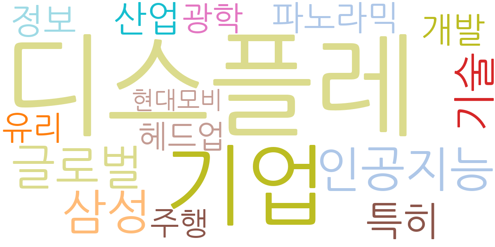
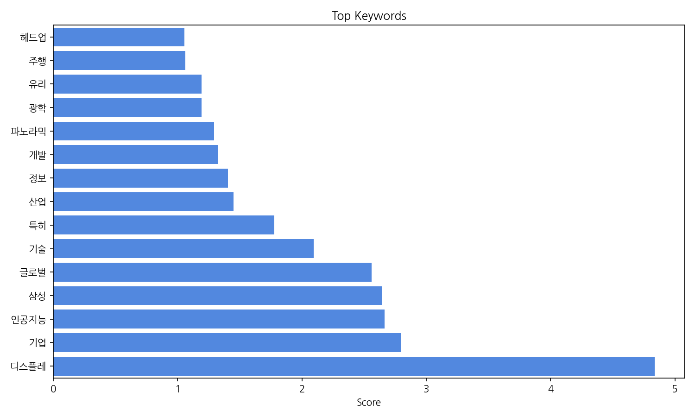
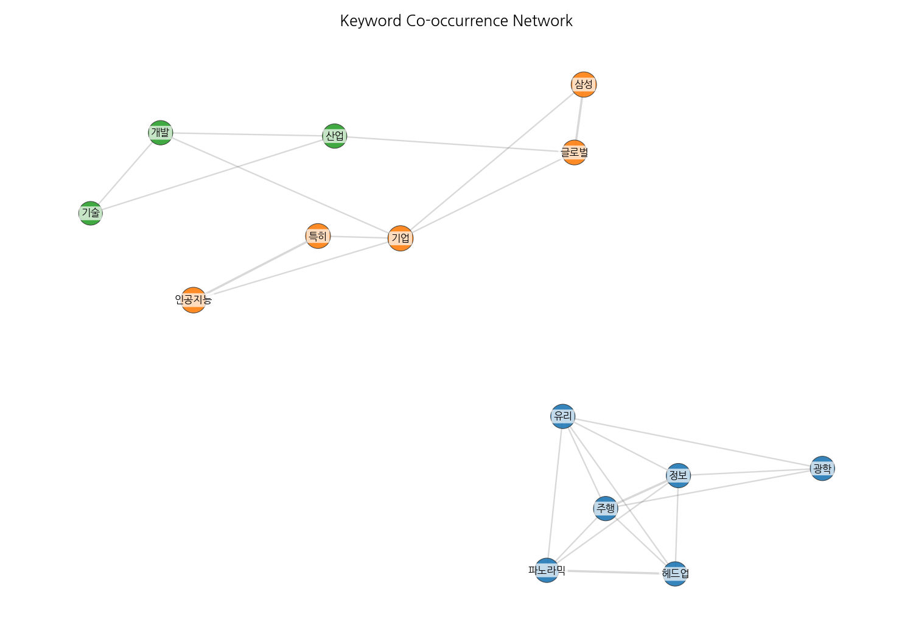
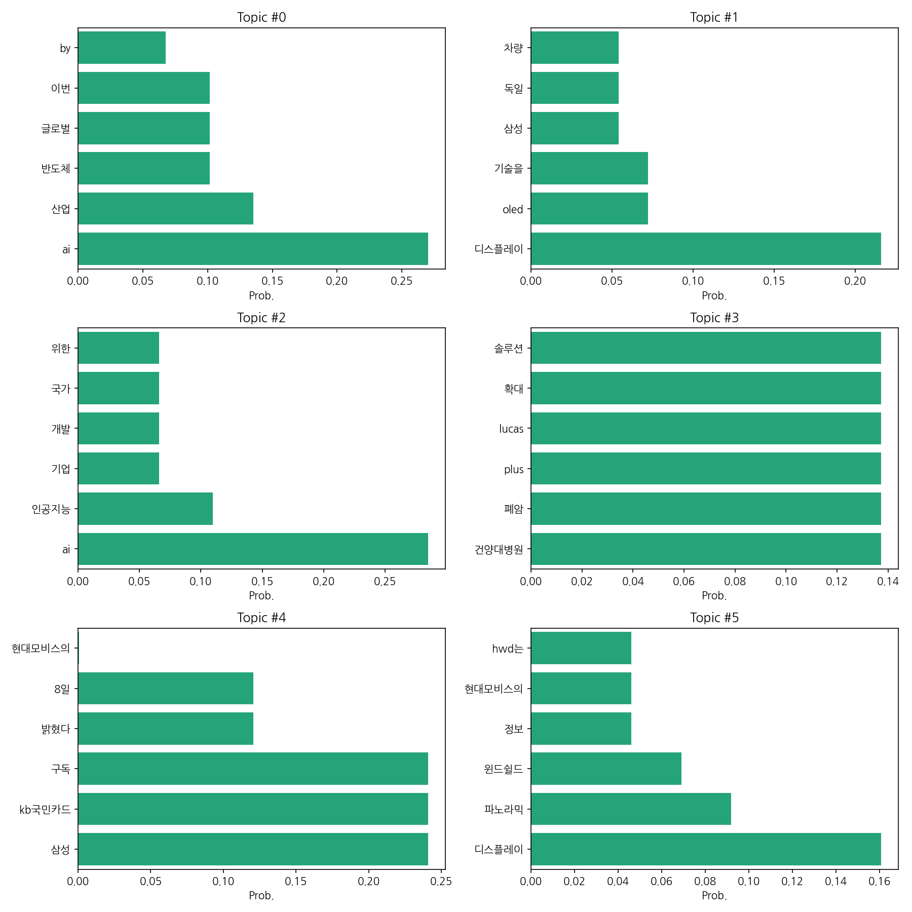
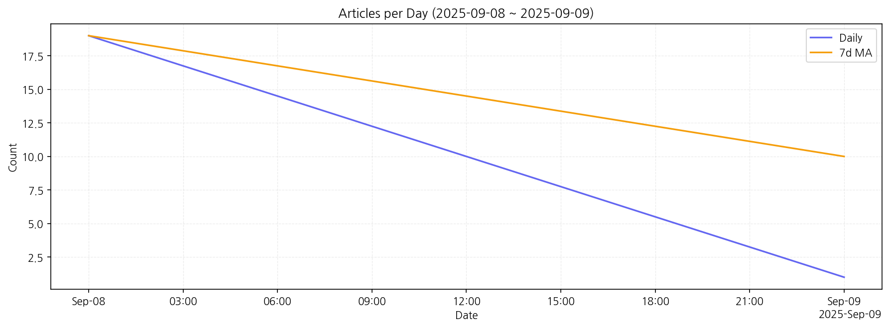

1) 상위 토픽을 3개 주제로 묶어 핵심 맥락을 설명하면 다음과 같습니다. 첫째, AI 및 반도체 산업의 글로벌 경쟁 심화를 다루는 주제입니다. AI 기술 발전과 산업 적용 확대에 대한 기사가 많았으며, 특히 반도체 산업과의 연관성이 강조되었습니다. 둘째, 디스플레이 기술, 특히 자동차용 디스플레이(예: 파노라믹 윈드쉴드)와 관련된 기술 발전과 시장 경쟁을 보여줍니다. 삼성과 현대모비스 등 주요 기업의 활동이 주목받았습니다. 셋째, AI 기반 기술 개발과 의료 분야(예: 폐암 진단)의 융합을 보여주는 주제입니다. 건양대병원 관련 기사가 눈에 띄며, AI 기술을 활용한 의료 솔루션 개발 및 적용이 주요 내용입니다.
2) 최근 변화/스파이크를 짚어보면, 9월 8일에는 다양한 분야에 걸쳐 19건의 기사가 보도되었으나, 9월 9일에는 1건으로 급감했습니다. 이는 특정 이슈에 대한 집중 보도 후 관심이 줄어든 것으로 추측됩니다.
3) 실무 인사이트 3가지:

| Rank | Keyword | Score |
|---|---|---|
| 1 | 디스플레 | 4.836 |
| 2 | 기업 | 2.797 |
| 3 | 인공지능 | 2.665 |
| 4 | 삼성 | 2.646 |
| 5 | 글로벌 | 2.562 |
| 6 | 기술 | 2.096 |
| 7 | 특히 | 1.777 |
| 8 | 산업 | 1.449 |
| 9 | 정보 | 1.404 |
| 10 | 개발 | 1.322 |
| 11 | 파노라믹 | 1.294 |
| 12 | 광학 | 1.193 |
| 13 | 유리 | 1.191 |
| 14 | 주행 | 1.061 |
| 15 | 헤드업 | 1.054 |




1) 상위 토픽을 3개 주제로 묶어 핵심 맥락을 설명하면 다음과 같습니다. 첫째, AI 및 반도체 산업의 글로벌 경쟁 심화를 다루는 주제입니다. AI 기술 발전과 산업 적용 확대에 대한 기사가 많았으며, 특히 반도체 산업과의 연관성이 강조되었습니다. 둘째, 디스플레이 기술, 특히 자동차용 디스플레이(예: 파노라믹 윈드쉴드)와 관련된 기술 발전과 시장 경쟁을 보여줍니다. 삼성과 현대모비스 등 주요 기업의 활동이 주목받았습니다. 셋째, AI 기반 기술 개발과 의료 분야(예: 폐암 진단)의 융합을 보여주는 주제입니다. 건양대병원 관련 기사가 눈에 띄며, AI 기술을 활용한 의료 솔루션 개발 및 적용이 주요 내용입니다.
2) 최근 변화/스파이크를 짚어보면, 9월 8일에는 다양한 분야에 걸쳐 19건의 기사가 보도되었으나, 9월 9일에는 1건으로 급감했습니다. 이는 특정 이슈에 대한 집중 보도 후 관심이 줄어든 것으로 추측됩니다.
3) 실무 인사이트 3가지:
| Idea | Target | Value Prop | Score |
|---|---|---|---|
| AI 기반 자동차용 파노라믹 윈드쉴드 디스플레이 시스템 개발 | 자동차 제조사(현대자동차, 기아, GM 등), 자동차 부품 공급업체(현… | AI 기반으로 운전 상황에 맞춰 정보를 최적화하여 제공하고, AR 기능을 통해 주행 안전성을 높이는 차별화된 파노라믹 윈드쉴드 시스템입니다. 운전자의 피로도 감소 및 주행 안전… | 4.50 |
| AI 기반 폐암 조기 진단 플랫폼 개발 및 상용화 | 병원(대형 종합병원, 중소병원), 의료기관, 의료 AI 관련 기업 | AI 기반 영상 분석 기술을 통해 폐암을 조기에 정확하게 진단하는 플랫폼입니다. 기존 방식보다 진단 시간을 단축하고 정확도를 높이며, 의료진의 업무 부담을 줄여줍니다. 건양대… | 4.20 |
| AI 기반 반도체 설계 최적화 솔루션 | 반도체 설계 기업, 반도체 제조 기업, Fabless 기업 | AI 기반 자동화된 반도체 설계 최적화 솔루션을 제공하여 설계 시간 단축, 비용 절감, 오류 감소를 지원합니다. 글로벌 경쟁에서 차별화된 기술 경쟁력을 확보하고, 고객의 생산성… | 4.00 |
| AI 기반 글로벌 반도체 시장 분석 및 예측 플랫폼 | 반도체 기업, 투자 기관, 시장 조사 기관 | AI 기반의 데이터 분석 기술을 통해 글로벌 반도체 시장 동향을 실시간으로 분석하고 미래를 예측하는 플랫폼입니다. 정확한 시장 예측을 통해 기업의 전략적 의사결정을 지원하고, … | 3.80 |
| AI 기반 디스플레이 기술 트렌드 분석 및 예측 서비스 | 디스플레이 제조 기업(삼성디스플레이, LG디스플레이 등), 자동차 부… | AI 기반의 데이터 분석 및 예측 기술을 통해 디스플레이 기술 트렌드를 분석하고 미래를 예측하는 서비스입니다. 경쟁사 분석 및 시장 전망을 제공하여 기업의 R&D 전략 수립을 … | 3.50 |